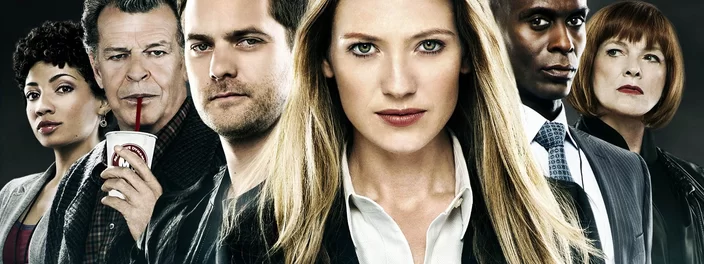

Desenvolvimento
Os co-criadores JJ Abrams, Alex Kurtzman e Roberto Orci começaram o processo de brainstorming para Fringe na primavera de 2008. Eles evitaram imitar o outro programa de Abrams, Lost, porque acreditavam que seus mistérios tornavam difícil atrair novos espectadores.Em vez disso, os co-criadores estudaram procedimentos criminais, como a série americana CSI: Crime Scene Investigation e a franquia Law & Order, em uma tentativa de fundir esse gênero com um programa mais baseado em mitologia sem criar apenas episódios independentes. Orci explicou: "Estudamos procedimentos especificamente para tentar mesclar os dois. Muito contra nossos instintos de fazer isso, mas quando nove dos principais programas de TV são chamados Law & Order e CSI, você tem que estudá-los um pouco e descobrir o que é que eles estão fazendo."
Jeff Pinkner, produtor executivo de duas das outras séries de televisão de Abrams, Lost e Alias, foi contratado para atuar como showrunner e produtor executivo de Fringe. Ele descreveu Fringe como preocupado com o "medo primordial", já que "nossos corpos e nossas mentes são, no final das contas, incognoscíveis. As maneiras como nossos corpos nos traem podem ser aterrorizantes".
Os críticos, assim como os envolvidos na produção do programa, reconheceram que Fringe teve um começo difícil. Abrams observou mais tarde: "Vai soar estranho, mas um programa começa a falar com você e a dizer o que quer ser. Demoramos um pouco para ouvir." os episódios tiveram reescritas contínuas e caras refilmagens de última hora. O ator Lance Reddick observou "Foi uma luta constante. Simplesmente não parecia um show de assinatura [de JJ Abrams] - ainda não." "Descobrimos que, absolutamente, no início, estávamos caindo na armadilha de - a provocação seria fantástica. E então responderíamos muito rapidamente e [reduziríamos] a tensão", disse ele. "E nós tentamos corrigir o curso e ter a promessa de provocar" perguntas que não são respondidas imediatamente.
Os escritores começaram a focar mais atenção na mitologia da série quando Akiva Goldsman se juntou temporariamente a Fringe para escrever e dirigir um episódio do meio da temporada, "Bad Dreams". Acreditando que "isso é o que os fãs querem saber", ele e Bryan Burk conseguiram convencer os outros escritores da série a começar a revelar o conceito de universos paralelos, apesar da intenção inicial dos escritores de apenas provocar a ideia de dois mundos em duas temporadas. . Eles também tentaram tornar a vida pessoal de Olivia mais relacionável terminando sua história com John Scott e dando a ela uma irmã e uma sobrinha. Abrams observou que Olivia estava evoluindo de uma "mulher cautelosa e protetora" que não tinha relacionamentos fortes com outras pessoas para alguém mais vulnerável; a presença da irmã de Olivia, observou ele, ajudou a dar ao personagem "pelo menos oportunidades de ser mais caloroso com alguém". Kevin Reilly observou nessa época: "Eu estava procurando evidências de que estava se tornando seu programa favorito. E foi durante a segunda metade da temporada que as pessoas começaram a dizer: 'Agora é uma televisão marcada para mim."